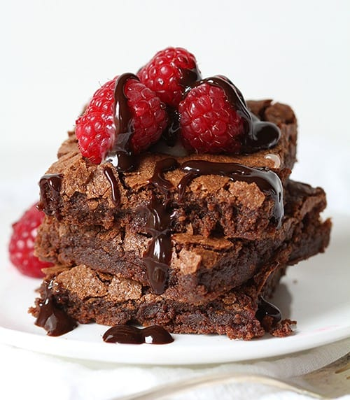
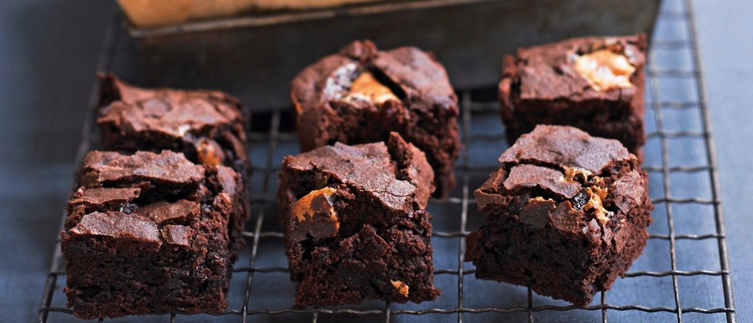

Шоколадово брауни

Необходими продукти:
- 200гр. шоколад
- 100гр. масло
- 4 средно големи яйца
- 250гр. захар
- 100гр. брашно
- 1 ч.л. бакплувер
Начин на приготвяне:
- Включете фурната на 180 градуса, за да се загрее. Поставете хартия за
печене в избрана от вас форма.
- Разтопете шоколада и маслото на водна баня или в микровълнова. След
получаване на хомогенна смес, оставете да се охлади до стайна
температура.
- В отделна купа разбийте захарта и яйцата, докато получите лека и
пухкава смес.
- Добавете шоколадовата смес към яйчената и полека прибавете сухите
съставки, които сте смесили предварително (брашно, какао и бакплувер).
По възможност ги пресейте през сито.
- По ваше желание можете да добавите 100гр. ядки по ваш избор.
- Печете около 25-30 минути, оставете да се охлади след това и чак
тогава нарежете.
